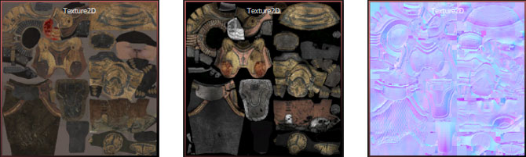

UDN
Search public documentation:
MaterialsAndTexturesHomeJP
English Translation
中国翻译
한국어
Interested in the Unreal Engine?
Visit the Unreal Technology site.
Looking for jobs and company info?
Check out the Epic games site.
Questions about support via UDN?
Contact the UDN Staff
中国翻译
한국어
Interested in the Unreal Engine?
Visit the Unreal Technology site.
Looking for jobs and company info?
Check out the Epic games site.
Questions about support via UDN?
Contact the UDN Staff
UE3 ホーム > マテリアルとテクスチャ
マテリアルとテクスチャ
 マテリアル、および、マテリアル内で使用されるテクスチャによって、ワールド内にあるサーフェス (外面) の見え方が決まります。マテリアルとテクスチャは、サーフェスの色を制御するだけではなく、選択した光源処理モデルとブレンドモデルを使用して、各サーフェスがライトとどのように相互作用するかということも制御するのです。光源処理モデルは、ライトがサーフェスとどのように相互作用するかを決めるものです。また、ブレンドモデルは、レンダリングされているサーフェスが他のシーンとどのようにブレンドするかを制御するものです。
マテリアル、および、マテリアル内で使用されるテクスチャによって、ワールド内にあるサーフェス (外面) の見え方が決まります。マテリアルとテクスチャは、サーフェスの色を制御するだけではなく、選択した光源処理モデルとブレンドモデルを使用して、各サーフェスがライトとどのように相互作用するかということも制御するのです。光源処理モデルは、ライトがサーフェスとどのように相互作用するかを決めるものです。また、ブレンドモデルは、レンダリングされているサーフェスが他のシーンとどのようにブレンドするかを制御するものです。
マテリアル
- マテリアル エディタ ユーザーガイド - 「Unreal Engine 3」のノードベースのマテリアル エディタについて概説。
- マテリアル インスタンス エディタのためのユーザーガイド - 「Unreal Engine 3」のマテリアル インスタンスのためのエディタについて概説。
- マテリアル概要 - マテリアル入力とプロパティの説明。
- インスタンス化したマテリアル - 「Unreal Engine 3」のマテリアル インスタンス化システムについて概説。
- Material Instance Constant (マテリアル インスタンス コンスタント) - パラメータ化されたマテリアル インスタンスを使用するためのガイド。
- Material Instance Time Varying (マテリアル インスタンス時間変動) - 時間とともに変動するマテリアルインスタンスの使用法についてのガイド。
- Lit Translucency (光源処理された透過性) - 静的に光源処理された透過性の使用法について概説。
- モバイル用マテリアルのリファレンス - モバイルデバイス用マテリアルの作成について解説。
- マテリアルのチュートリアル - 単純なマテリアルを作成するためのガイド。
- マテリアル要約 - マテリアルシステムで使用できるあらゆる表現式のノードについて解説。
- マテリアルのサンプル - さまざまなタイプのマテリアルを作成するための秘訣やテクニックについて解説。
- マテリアルの基本 - 基本的なマテリアルについて概説。
- マテリアル関数 - マテリアル関数についての解説。
- カスタム ライティング - カスタムのライティング モデルを使用する方法について解説。
- 異方性ライティング - 異方性光源処理モデルの使用方法について解説。
- SoftMasked - SoftMasked (ソフトマスク) ブレンドモードについて解説。
- DepthBiasBlend - DepthBiasBlend (深度バイアスブレンド) 式の使用方法に関するガイド。
- アルファを使用するヘアの作成 - 「Unreal Engine 3」でマテリアルとメッシュを使用してヘアを作成する方法について解説。
- フェイク メッシュ ライティング - マテリアルを使用して、メッシュおよびパーティクル上でライティングをフェイクする方法について解説。
- WorldPositionOffset - WorldPositionOffset (ワールド位置オフセット) マテリアル入力の使用方法について解説。
- マテリアルマスク - マテリアル式を使用してアルゴリズム的手法でマスクとグラディエントを作成する方法について解説。
- イメージベースの反射 - シーン全体に及ぶ HDR 反射をレンダリングする方法について解説。
- スクリーン空間サブサーファス スキャタリング - リアルな人間の肌のための SSS (スクリーン空間サブサーファス スキャタリング) マテリアルエフェクトについて解説。
- テセレーション - シルエットを含むよりスムーズなサーファスのためにメッシュからより多くのトライアングルを生成。
- 歪んだ反射の作成 - シーンを反射するマテリアルを作成する方法について解説。
- 動的な法線マップ - マテリアル内の高さマップから法線マップを作成する方法について解説。
- 視差オクルージョンマッピング - 視差オクルージョンをマテリアルに追加する方法について解説。
- オクルードされたアクタのレンダリング - ジオメトリの背後に隠れているアクタのゴーストをレンダリングする方法について解説。
- リアルタイムの変形 - リアルタイムに変形することができるサーフェスの作成方法について。
- HUD Distortion - HUD Distortion (歪み) ポストプロセスエフェクトを作成する方法について解説。
テクスチャ

上のイメージでは、それぞれレイアウトが同じでも、使用されているカラーがテクスチャの目的に固有のものであることが分かります。- テクスチャのサポートと設定 - エンジンおよびハードウェアがサポートしているテクスチャについて解説。
- テクスチャのプロパティ - 「Unreal Engine 3」で使用される、テクスチャのための各種プロパティについて解説。
- 法線マップのフォーマット - 法線マップに使用される、さまざまなタイプの圧縮について概説。
- Flipbook テクスチャ - 「Unreal Engine 3」のアニメートされたテクスチャである Flipbook (パラパラ漫画) について概説。
- ムービーテクスチャ - 統合されたムービーテクスチャシステムについて概説。
- Render To Texture - 「Unreal Engine 3」の render-to-texture (テクスチャへのレンダリング) 機能について概説。
- モバイル テクスチャのリファレンス - モバイルデバイスでテクスチャを扱うための情報を掲載。
- テクスチャ ストリーミング - 「Unreal Engine 3」のテクスチャ ストリーミングについて概説。
- テクスチャ作成のヒント - 法線マップマテリアルとともに使用されるテクスチャを作成する際のヒント。
- テクスチャのインポートのチュートリアル - テクスチャを「Unreal Engine 3」に取り込むための方法について。
- 法線マップ作成のテクニック - 法線マップを作成するための実用的なアドバイスとリソース。
- シェードマップ作成のテクニック - 3dsMax を使用してシェードマップを作成するためのガイド。
- フォントのインポート - 「Unreal Engine 3」でTrueType フォントをインポートする方法について解説。
- テクスチャ用の写真を上手く撮るには - テクスチャの参照用としての写真を撮る際の秘訣について解説。
- テクスチャ最適化のテクニック - テクスチャによって占有されるメモリを減らす方法を解説。